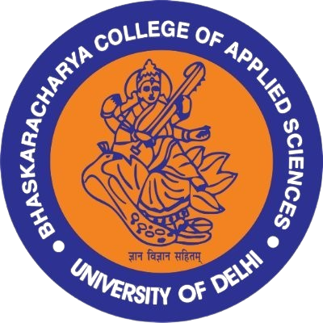
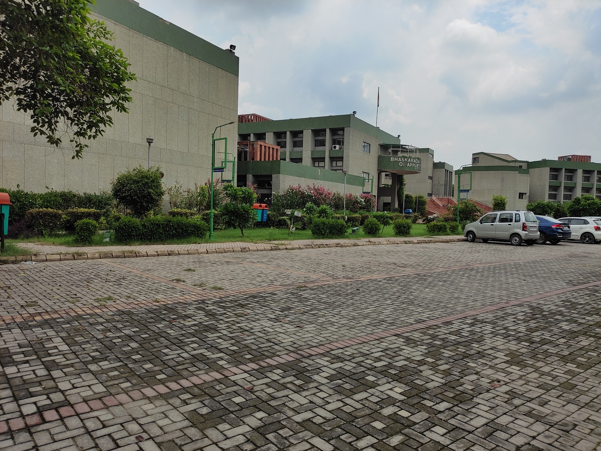
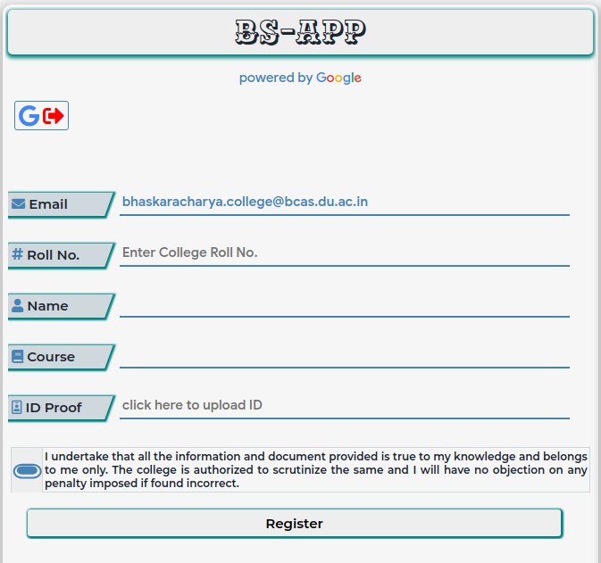

BHASKARACHARYA COLLEGE OF APPLIED SCIENCES
(University of Delhi)
Accredited "A++" Grade by NAAC
'Star College Status' by DBT
2023 NIRF Ranking - 22


Bhaskaracharya College of Applied Sciences named after a great mathematician of 12th Century was set up in October, 1995. The college is a constituent college of University of Delhi and is 100% funded by Government of National Territory of Delhi.
The main goal of the institution is to train students in various self oriented professional courses like Computer Science, Electronics, Instrumentation and Food Technology.
Within a short span of time, our college has achieved remarkable recognition as one of the few excellent institutions in Delhi. The college is housed in a spacious new building sprawled over ten acres at Sector 2, Dwarka, New Delhi. The new college campus has twelve departments out of which ten departments have 3 laboratories each.
In addition to this there is a Conference Room, an Audio Visual Hall, Library spanning three separate floors, an open Air Theatre and indoor and outdoor sports facility. In addition to classroom lectures, the course curriculum also includes seminars, industrial tour, project training, etc.
The project training helps in experiencing the working culture in the industry whereas the seminars provide first hand information and an opportunity to interact with the eminent personalities of industries.
BCAS Student App

BCAS Students App is a Google web application to provide and receive various college and academic related information for
students.
Instructions